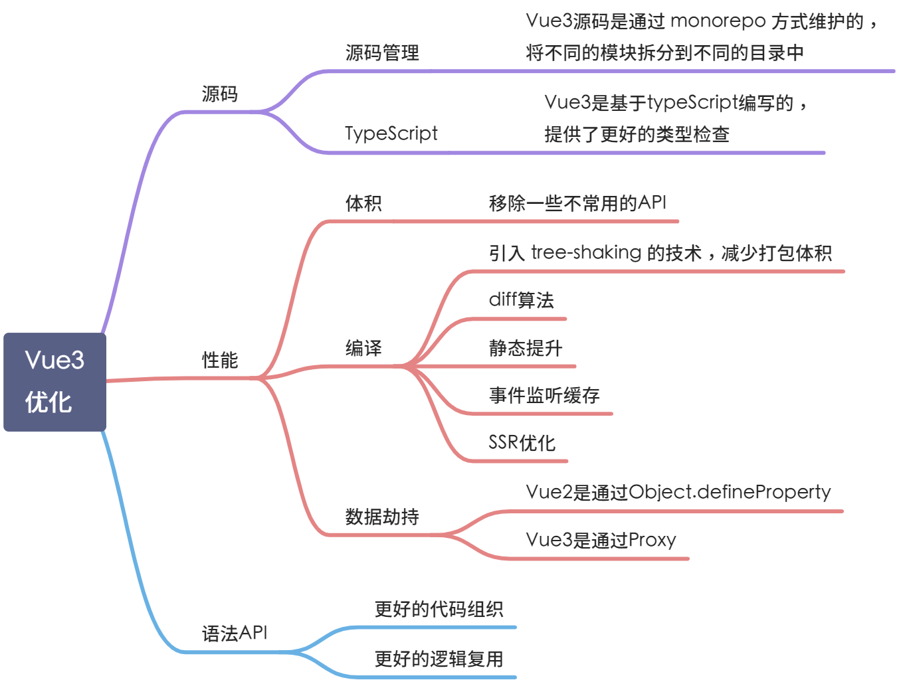
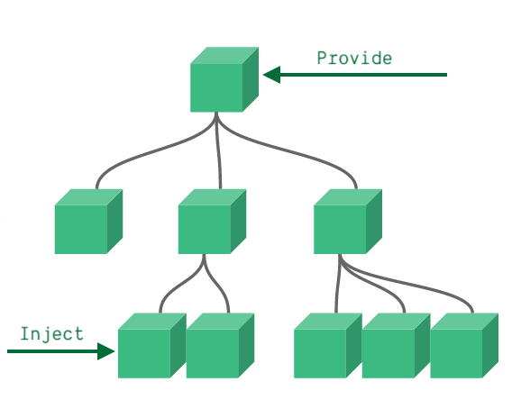

1 为什么要用 Vue3 因为它体积更小、速度更快、提供 Composition API，增加了代码的逻辑组织和代码复用能力，提供了更好的类型检查。

2 Composition API 注：在 Vue3 中其实是可以使用 Vue2 的写法，根据我们的规范，不允许出现 Vue2 的写法。
2.1 Composition API 是什么？
官网 https://v3.cn.vuejs.org/guide/composition-api-introduction.html# 什么是组合式-api
看下边图，把每种色块当作一个功能，应该可以很直观地感受到 Composition API 在逻辑代码组织方面的优势
在 Composition API 中，组件根据逻辑功能来组织的，一个功能所定义的所有 API 会放在一起（更加的高内聚，低耦合），当需要修改一个功能时，就不再需要在文件中跳来跳去。
下面举个简单例子，将处理 count 属性相关的代码放在同一个函数了
1 2 3 4 5 6 7 8 9 10 11 12 13 14 15 16 function useCount ( const count = ref(10 ); const double = computed(() => count.value * 2 ); const handleConut = () => { count.value *= 2 ; }; console .log(count); return { count, double, handleConut, }; }
使用 count
1 2 3 4 5 6 7 8 9 10 export default defineComponent({ setup ( const { count, double, handleConut } = useCount(); return { count, double, handleConut, }; }, });
2.2 setup setup() 函数是 vue3 中，专门为 vue 组件提供的新属性。它为我们使用 vue3 的 Composition API 新特性提供了统一的入口。
那么下面我们将分别从函数的几个方面来解析 setup 函数：
return 返回值
函数的参数
何时调用
this 指向
2.2.1 返回值 在 setup 函数中返回一个对象，这样我们就可以在 template 模板中直接访问该对象中的属性和方法。如果只是在 setup 函数中使用某个方法，则不需要返回。
1 2 3 4 5 6 7 8 9 10 11 12 13 14 ... setup ( const content = '这是 setup 中返回的数据' ; const testFun = () => { console .log('调用 testFun 方法' ) }; return { content, testFun, } } ...
2.2.2 函数的参数 使用 setup 函数时，它将接受两个参数：
propscontext
2.2.2.1、props setup 函数中的第一个参数是 props，它是响应式的，当传入新的 props 时，它会被更新。
1 2 3 4 5 6 7 8 9 10 11 12 ... setup ( props: { title: { type: String , }, }, setup (props ) console .log(props.title); } } ...
开发规范：https://www.yuque.com/heq286/dswu9s/sye0sb#sGYuw
因为 props 是响应式的，所以不能使用 ES6 解构 ，因为它会消除 props 的响应性。
如果需要解构 props，可以通过使用 setup 函数中的 [toRefs](https://vue3js.cn/docs/zh/api/refs-api.html#toref) 来安全地完成此操作。
1 2 3 4 5 6 7 8 9 ... import { toRefs } from 'vue' ;setup (props ) const { title } = toRefs(props.data); console .log(title.value); } ...
1.2.2.2、context setup 函数的第二个参数是 context。context 是一个普通的 JavaScript 对象，它暴露组件的三个 property：
1 2 3 4 5 6 7 8 9 10 11 12 ... setup (props, context ) console .log(context.attrs) console .log(context.slots) console .log(context.emit) } ...
context 是一个普通的 JavaScript 对象，也就是说，它不是响应式的，这意味着你可以安全地对 context 使用 ES6 解构。
1 2 3 4 5 ... setup (props, { attrs, slots, emit } ) ... } ...
attrs 和 slots 是有状态的对象，它们总是会随组件本身的更新而更新。这意味着你应该避免对它们进行解构，并始终以 attrs.x 或 slots.x 的方式引用 属性。请注意，与 props 不同，attrs 和 slots 是非 响应式的。如果你打算根据 attrs 或 slots 更改应用副作用，那么应该在 onUpdated 生命周期钩子中执行此操作。
1 2 3 4 5 6 7 8 9 10 11 12 13 14 15 16 <template> <el-button type="primary" @click="getAttrs">点击获取Attrs</el-button </template> ... setup(props, { attrs, slots, emit }) { console.log(attrs.title); const getAttrs = () => { console.log(attrs.title); }; return { getAttrs, } } ...
1.2.3 何时调用 setup 函数会在 beforeCreate 和 created 之前执行。
setup 函数在创建组件之前被调用，所以在 setup 被执行时，组件实例并没有被创建。
1.2.4 this 指向 由于在执行 setup 时，尚未创建组件实例，因此在 setup 选项中没有 this。
在 **setup()**内部， **this**不会是该活跃实例的引用 ，因为 setup() 是在解析其它组件选项之前被调用的，所以 setup() 内部的 this 的行为与其它选项中的 this 完全不同。这在和其它选项式 API 一起使用 setup() 时可能会导致混淆。
1 2 3 4 5 6 7 8 9 10 ... setup ( console .log(this ); }, created ( console .log(this ); } ...
1.2.4.1 问题：如何在 Vue3 中定义、获取全局变量？ 使用场景：需要设置名称为 name 的全局变量，并在所有组件中都能访问到此变量。
1.2 生命周期
官网：https://www.vue3js.cn/docs/zh/guide/composition-api-lifecycle-hooks.html
开发规范：https://www.yuque.com/heq286/dswu9s/sye0sb#HXy1X
通过在生命周期钩子前面加上 “on” 来访问组件的生命周期钩子
说明
Vue3
Vue2
创建组件前
setup
beforeCreate
创建组件后
setup
created
组件挂载前
onBeforeMount
beforeMount
组件挂载后
onMounted
mounted
组件更新前
onBeforeUpdate
beforeUpdate
组件更新后
onUpdated
updated
组件销毁前
onBeforeUnmount
beforeDestroy
组件销毁后
onUnmounted
destroyed
按需加载，更能减少代码体积
vue3 的生命周期会优先于 vue2 的执行。
完整示例：
1 2 3 4 5 6 7 8 9 10 11 12 13 14 15 16 17 18 19 20 21 22 23 24 25 26 27 28 29 30 31 32 33 34 35 36 37 <script lang="ts" > import { onBeforeMount, onMounted, onBeforeUpdate, onUpdated, onBeforeUnmount, onUnmounted } from 'vue' export default { name: "生命周期" , setup ( console .log('1---setup,组件创建之前' ) onBeforeMount(()=> { console .log('2---onBeforeMount,组件挂载到dom前' ) }) onMounted(()=> { console .log('3---onMounted,组件挂载到dom后' ) }) onBeforeUpdate(()=> { console .log('4---onBeforeUpdate,组件更新前' ) }) onUpdated(()=> { console .log('5---onUpdated,组件更新后' ) }) onBeforeUnmount(()=> { console .log('6---onBeforeUnmount，卸载组件前' ) }) onUnmounted(()=> { console .log('7---onBeforeUnmount，卸载组件后' ) }) } } </script>
1.3 提供/注入（provide & inject） provide() 和 inject() 可以实现嵌套组件之间的数据传递。provide() 函数向下传递数据；子级组件中使用 inject() 获取上层传递过来的数据。
通常，当我们需要从父组件向子组件传递数据时，我们会使用 props 。provide 和 inject 。无论组件层次结构有多深，父组件都可以作为其所有子组件的依赖提供者。

官 网：https://v3.cn.vuejs.org/guide/component-provide-inject.html
1.3.1 使用 Provide
provide 函数允许通过两个参数定义 property：
property 的 name (<String> 类型)
property 的 value （<String、Array、Object、Fun> 类型）
1 import { provide } from "vue" ;
示例：
父组件
1 2 3 4 5 6 7 8 9 10 11 12 13 14 15 16 17 18 19 20 21 22 23 24 25 26 27 <template> <div> <h3>我是父组件</h3> <inject-child1 /> </div> </template> <script> import { defineComponent, provide } from "vue"; import InjectChild1 from "@/components/inject-child1.vue"; export default defineComponent({ components: { InjectChild1, }, setup() { // 定义数据 const themeColor = "red"; // 通过 provide 函数向子级组件共享数据（不限层级） // provide('要共享的数据名称', 被共享的数据) provide("globalColor", themeColor); return {}; }, }); </script>
1.3.2 使用注入
inject 函数有两个参数：
要注入的 property 的名称
一个默认的值，当属性不存在时，读取默认的值 (可选 )
1 import { inject } from "vue" ;
示例：
子组件
1 2 3 4 5 6 7 8 9 10 11 12 13 14 15 16 17 18 19 20 21 22 23 24 25 26 27 <template> <div> <h3>我是子组件</h3> <p :style="{ color: themeColor }">文字颜色为：{{ themeColor }}</p> <inject-child2 /> </div> </template> <script lang="ts"> import { defineComponent, inject } from "vue"; import InjectChild2 from "@/components/inject-child2.vue"; export default defineComponent({ components: { InjectChild2, }, setup() { // 调用 inject 函数时，通过指定的数据名称，获取到父级共享的数据 const themeColor = inject("globalColor"); // 把响应式数据 return 给 Template 使用 return { themeColor, }; }, }); </script>
子 子子组件
1 2 3 4 5 6 7 8 9 10 11 12 13 14 15 16 17 18 19 20 21 22 23 24 25 26 27 28 29 30 31 32 33 34 <template> <h3>我是子子子组件</h3> <p :style="{ color: color }">文字颜色为：{{ color }}</p> <el-button @click="setGlobalColor">通过父组件修改</el-button> <el-button @click="forbidColor">直接修改</el-button> </template> <script lang="ts"> import { defineComponent, inject } from "vue"; export default defineComponent({ setup() { // 调用 inject 函数时，通过指定的数据名称，获取到父级共享的数据 const color = inject("globalColor"); // 调用父组件提供的方法 const setGlobalColor = inject("setGlobalColor"); /** * 修改组件中文字的颜色 */ const forbidColor = () => { // color.value = 'blue'; }; // 把响应式数据 return 给 Template 使用 return { color, setGlobalColor, forbidColor, }; }, }); </script>
1.3.3 响应式 为了增加提供值和注入值之间的响应性，我们可以在提供值时使用 ref 或 reactive 。
示例：
父组件
1 2 3 4 5 6 7 8 9 10 11 12 13 14 15 16 17 18 19 20 21 22 23 24 25 26 27 28 29 30 31 32 33 34 35 36 37 <template> <div> <h3>我是父组件</h3> <el-button @click="clickTransmitData">点击给子组件传值</el-button> <inject-child1 /> </div> </template> <script lang="ts"> import { defineComponent, provide, ref } from "vue"; import InjectChild1 from "@/components/inject-child1.vue"; export default defineComponent({ components: { InjectChild1, }, setup() { // 定义 ref 响应式数据 const themeColor = ref("red"); // 通过 provide 函数向子级组件共享数据（不限层级） // provide('要共享的数据名称', 被共享的数据) provide("globalColor", themeColor); /** * 点击传递数据 */ const clickTransmitData = () => { themeColor.value = "blue"; }; return { clickTransmitData, }; }, }); </script>
1.3.4 修改响应式 property 当使用响应式提供/注入值时，建议尽可能，在提供者内保持响应式 property 的任何更改。然而，有时我们需要在注入数据的组件内部更新注入的数据。在这种情况下，我们建议提供一个方法来负责改变响应式 property。
父组件：
1 2 3 4 5 6 7 8 9 10 11 12 13 14 15 16 17 18 19 20 21 22 23 24 25 26 27 28 29 30 31 32 33 34 35 36 37 38 39 40 41 42 <template> <div> <h3>我是父组件</h3> <el-button type="primary" @click="clickTransmitData" >点击给子组件传值</el-button > <inject-child1 /> </div> </template> <script lang="ts"> import { defineComponent, provide, ref } from "vue"; import InjectChild1 from "@/components/inject-child1.vue"; export default defineComponent({ components: { InjectChild1, }, setup() { // 定义 ref 响应式数据 const themeColor = ref("red"); // 通过 provide 函数向子级组件共享数据（不限层级） // provide('要共享的数据名称', 被共享的数据) provide("globalColor", themeColor); /** * 点击传递数据 */ const clickTransmitData = () => { themeColor.value = "blue"; }; // 提供修改全局的方法 provide("setGlobalColor", clickTransmitData); return { clickTransmitData, }; }, }); </script>
子组件 ：
1 2 3 4 5 6 7 8 9 10 11 12 13 14 15 16 17 18 19 20 21 22 23 24 25 26 27 28 29 30 31 32 33 <template> <div> <h3>我是子组件</h3> <p :style="{ color: themeColor }">文字颜色为：{{ themeColor }}</p> <el-button @click="setGlobalColor">通过父组件修改</el-button> <el-button @click="forbidColor">直接修改</el-button> <inject-child2 /> </div> </template> <script lang="ts"> import { defineComponent, inject } from "vue"; import InjectChild2 from "@/components/inject-child2.vue"; export default defineComponent({ components: { InjectChild2, }, setup() { // 调用 inject 函数时，通过指定的数据名称，获取到父级共享的数据 const themeColor = inject("globalColor"); // 调用父组件提供的方法 const setGlobalColor = inject("setGlobalColor"); // 把响应式数据 return 给 Template 使用 return { themeColor, setGlobalColor, }; }, }); </script>
1.3.5 禁止数据的更改 如果要确保通过 provide 传递的数据不会被注入的组件更改，我们建议对提供者的 property 使用 readonly。
父组件：
1 2 3 4 5 6 7 8 9 10 11 12 13 14 15 16 17 18 19 20 21 22 23 24 25 26 27 28 29 30 31 32 33 34 35 36 37 38 39 40 41 42 <template> <div> <h3>我是父组件</h3> <el-button type="primary" @click="clickTransmitData" >点击给子组件传值</el-button > <inject-child1 /> </div> </template> <script lang="ts"> import { defineComponent, provide, ref, readonly } from "vue"; import InjectChild1 from "@/components/inject-child1.vue"; export default defineComponent({ components: { InjectChild1, }, setup() { // 定义 ref 响应式数据 const themeColor = ref("red"); // 通过 provide 函数向子级组件共享数据（不限层级） // provide('要共享的数据名称', 被共享的数据) provide("globalColor", readonly(themeColor)); /** * 点击传递数据 */ const clickTransmitData = () => { themeColor.value = "blue"; }; // 提供修改全局的方法 provide("setGlobalColor", clickTransmitData); return { clickTransmitData, }; }, }); </script>
1.3.6 完整示例 父组件
1 2 3 4 5 6 7 8 9 10 11 12 13 14 15 16 17 18 19 20 21 22 23 24 25 26 27 28 29 30 31 32 33 34 35 36 37 38 39 40 41 42 43 44 45 46 47 48 49 <template> <div> <p class="title">测试提供/注入</p> <h3>我是父组件</h3> <el-button type="primary" @click="clickTransmitData" >点击给子组件传值</el-button > <inject-child1 /> </div> </template> <script lang="ts"> import { defineComponent, provide, ref, readonly } from "vue"; import InjectChild1 from "@/components/inject-child1.vue"; export default defineComponent({ components: { InjectChild1, }, setup() { // 定义 ref 响应式数据 const themeColor = ref("red"); // 定义数据 // const themeColor = 'red'; // 通过 provide 函数向子级组件共享数据（不限层级） // provide('要共享的数据名称', 被共享的数据) provide("globalColor", themeColor); // 只读数据 // provide('globalColor', readonly(themeColor)); /** * 点击传递数据 */ const clickTransmitData = () => { themeColor.value = "blue"; }; // 提供修改全局的方法 provide("setGlobalColor", clickTransmitData); return { themeColor, clickTransmitData, }; }, }); </script>
子组件 ：
1 2 3 4 5 6 7 8 9 10 11 12 13 14 15 16 17 18 19 20 21 22 23 24 25 26 27 28 29 30 31 32 33 34 35 36 37 38 39 40 41 <template> <div> <h3>我是子组件</h3> <p :style="{ color: color }">文字颜色为：{{ color }}</p> <el-button @click="setGlobalColor">通过父组件修改</el-button> <el-button @click="forbidColor">直接修改</el-button> <inject-child2 /> </div> </template> <script lang="ts"> import { defineComponent, inject } from "vue"; import InjectChild2 from "@/components/inject-child2.vue"; export default defineComponent({ components: { InjectChild2, }, setup() { // 调用 inject 函数时，通过指定的数据名称，获取到父级共享的数据 const color: any = inject("globalColor"); // 调用父组件提供的方法 const setGlobalColor = inject("setGlobalColor"); /** * 修改组件中文字的颜色 */ const forbidColor = () => { // color.value = 'blue'; }; // 把响应式数据 return 给 Template 使用 return { color, setGlobalColor, forbidColor, }; }, }); </script>
子子组件 ：
1 2 3 4 5 6 7 8 9 10 11 12 13 14 15 16 17 18 19 20 21 22 <template> <div> <h3>我是子子组件</h3> <p :style="{ color: color }">文字颜色为：{{ color }}</p> </div> </template> <script lang="ts"> import { defineComponent, inject } from "vue"; export default defineComponent({ setup() { // 调用 inject 函数时，通过指定的数据名称，获取到父级共享的数据 const color = inject("globalColor"); // 把响应式数据 return 给 Template 使用 return { color, }; }, }); </script>
1.4 模板使用（获取模板内的元素 ） 使用场景：比如 echarts 获取 dom 元素、element-plus 表单验证
为了获得对模板内元素或组件实例的引用，我们可以像往常一样声明 ref 并从 setup()
1.4.1 元素的引用 1 2 3 4 5 6 7 8 9 10 11 12 13 14 15 16 17 18 19 20 21 22 23 24 25 26 27 28 <template> <div> <h3 ref="h3Ref">TemplateRefOne</h3> </div> </template> <script> import { defineComponent, ref, onMounted } from "vue"; export default defineComponent({ setup() { // 创建一个 DOM 引用 const h3Ref = ref(null); // 在 DOM 首次加载完毕之后，才能获取到元素的引用 onMounted(() => { // 为 dom 元素设置字体颜色 // h3Ref.value 是原生DOM对象 h3Ref.value.style.color = "red"; }); // 把创建的引用 return 出去 return { h3Ref, }; }, }); </script>
1.4.2 组件的引用 父组件中的示例代码如下：
1 2 3 4 5 6 7 8 9 10 11 12 13 14 15 16 17 18 19 20 21 22 23 24 25 26 27 28 29 30 31 32 33 34 <template> <div> <test-c-child ref="comRef"></test-c-child> <el-button type="primary" @click="showNumber" >点击获取子元素里的变量值</el-button > </div> </template> <script> import { defineComponent, ref, onMounted } from "vue"; import testCChild from "@/components/test-c-child.vue"; export default defineComponent({ components: { testCChild, }, setup() { // 创建一个组件的 ref 引用 const comRef = ref(null); // 展示子组件中 count 的值 const showNumber = () => { console.log(comRef.value.count); }; // 把创建的引用 return 出去 return { comRef, showNumber, }; }, }); </script>
子组件中的示例代码：
1 2 3 4 5 6 7 8 9 10 11 12 13 14 15 16 17 18 19 20 21 22 23 24 <template> <div> <h5>我是子组件里的值哦 --- {{ count }}</h5> <!-- 点击按钮，让 count 值自增 +1 --> <el-button type="primary" @click="count += 1">点击+1</el-button> </div> </template> <script lang="ts"> import { defineComponent, ref } from "vue"; export default defineComponent({ name: "TestCChild", setup() { // 定义响应式的数据 const count = ref(0); // 把响应式数据 return 给 Template 使用 return { count, }; }, }); </script>
3 响应式 3.1 响应式基础 使用场景推荐：
reactive 推荐定义复杂的数据类型
ref 推荐定义基本数据类型，ref 底层的本质还是 reactive，因为系统会根据我们给 ref 传入的值将它转换成对象 ref(xx)–>reactive({value: xx})
官网：https://vue3js.cn/vue-composition/#ref-vs-reactive > https://zhuanlan.zhihu.com/p/268053724
3.1.1 reactive reactive() 函数接收一个普通对象，返回一个响应式的数据对象。
1 import { reactive } from 'vue';
在 setup() 函数中调用 reactive() 函数，创建响应式数据对象：
示例
1 2 3 4 5 6 7 8 9 10 11 12 13 14 15 16 17 18 19 20 21 22 23 24 <template> <div> <p>reactive</p> <h3>当前的 reactiveCount 值为：{{ reactiveCount }}</h3> <el-button @click="reactiveCount++">点击reactiveCount+1</el-button> </div> </template> <script lang="ts"> import { defineComponent, reactive, toRefs, ref } from "vue"; export default defineComponent({ name: "TestE", setup() { // reactive // 创建响应式数据对象 const state = reactive({ reactiveCount: 0 }); return { ...toRefs(state), }; }, }); </script>
3.1.2 ref 3.1.2.1 基本用法 ref() 函数用来根据给定的值创建一个响应式 的数据对象 ，ref() 函数调用的返回值是一个对象，这个对象上只包含一个 .value 属性：
数据类型：不限，字符串、数值、布尔值、对象
1 2 3 4 5 6 7 8 9 10 11 12 13 import { ref } from "vue" ;const refCount = ref(0 );console .log(refCount.value); refCount.value += 1 ; console .log(refCount.value);
3.1.2.2 在 template 中访问 ref 创建的响应式数据 当 ref 作为渲染上下文 (从 setup() 中返回的对象) 上的 property 返回并可以在模板中被访问时，它将自动展开为内部值。不需要在模板中追加 .value：
1 2 3 4 5 6 7 8 9 10 11 12 13 14 15 16 17 18 19 20 21 22 23 24 25 26 27 28 29 30 <template> <div> <p>ref</p> <h3>当前的 refCount 值为：{{ refCount }}</h3> <el-button @click="refCount++">点击refCount+1</el-button> </div> </template> <script lang="ts"> import { defineComponent, reactive, toRefs, ref } from "vue"; export default defineComponent({ name: "TestE", setup() { // ref // 创建响应式数据对象 count，初始值为 0 const refCount = ref(0); // 如果要访问 ref() 创建出来的响应式数据对象的值，必须通过 .value 属性才可以 console.log(refCount.value); // 输出 0 // 让 count 的值 +1 refCount.value += 1; // 再次打印 count 的值 console.log(refCount.value); // 输出 1 return { refCount, }; }, }); </script>
#####
3.1.3 响应式状态解构 当我们想使用大型响应式对象的一些 property 时，可能很想使用 ES6 解构 来获取我们想要的 property，比如下边的代码：
1 2 3 4 5 6 7 8 9 10 11 import { reactive } from "vue" ;const book = reactive({ author: "Vue Team" , year: "2020" , title: "Vue 3 Guide" , description: "You are reading this book right now ;)" , price: "free" , }); const { year, title } = book;
遗憾的是，使用解构的两个 property 的响应性都会丢失。对于这种情况，我们需要将我们的响应式对象转换为一组 ref。这些 ref 将保留与源对象的响应式关联：
1 2 3 4 5 6 7 8 9 10 11 12 13 14 15 16 17 18 import { reactive } from "vue" ;const book = reactive({ author: "Vue Team" , year: "2020" , title: "Vue 3 Guide" , description: "You are reading this book right now ;)" , price: "free" , }); const { title, year } = toRefs(book); const titleRef = toRef(book, "title" ); title.value = "我是新的值" ; console .log(book.title); console .log(title.value);
官网：https://v3.cn.vuejs.org/guide/reactivity-fundamentals.html# 响应式状态解构https://www.vue3js.cn/docs/zh/api/refs-api.html#ref
3.1.4 使用 readonly 防止更改响应式对象 有时我们想跟踪响应式对象 (ref 或 reactive) 的变化，但我们也希望防止在应用程序的某个位置更改它。例如，当我们有一个被 provide 的响应式对象时，我们不想让它在注入的时候被改变。为此，我们可以基于原始对象创建一个只读的 Proxy 对象：
1 2 3 4 5 6 7 8 9 10 const original = reactive({ count : 0 });const copy = readonly(original);original.count += 1 ; copy.count += 1 ;
3.2 响应式计算 使用场景：当依赖某个值的数据发生变化时，就会用到它。例如总价 = 数量 * 价格，当数量和价格发生变化时都会影响总价，这时计算属性就派上用场了。
computed() 用来创建计算属性，computed() 函数的返回值是一个 ref 的实例。使用 computed 之前需要按需导入：
1 import { computed } from "vue" ;
3.2.1 创建只读计算属性 在调用 computed() 函数期间，传入一个 function 函数，可以得到一个只读的计算属性，示例代码如下：
1 2 3 4 5 6 7 8 9 10 11 12 13 const count = ref(1 );const plusOne = computed(() => count.value + 1 );const plusOne = computed(() => { return count.value + 1 ; }); plusOne.value += 1 ;
3.2.2 创建可读可写的计算属性 在调用 computed() 函数期间，传入一个包含 get 和 set 函数的对象，可以得到一个可读可写的计算属性，示例代码如下：
1 2 3 4 5 6 7 8 9 10 11 12 const count = ref(1 );const plusOne = computed({ get: () => count.value + 1 , set: (val ) => { count.value = val - 1 ; }, });
3.3 响应式监听 watch() 函数用来监视某些数据项的变化，从而触发某些特定的操作，使用之前需要按需导入：
1 import { watch } from "vue" ;
3.3.1 基本用法 1 2 3 4 5 6 7 8 9 10 const count = ref(0 );watch( () => count.value, (newVal, oldVal) => { console .log(`新值${newVal} ` ); console .log(`旧值${oldVal} ` ); } );
3.3.2 监视指定的数据源 监视 reactive 类型的数据源：
1 2 3 4 5 6 7 8 9 const state = reactive({ count : 0 });watch( () => state.count, (count, prevCount) => { } );
监视 ref 类型的数据源：
1 2 3 4 5 6 7 8 9 10 const count = ref(0 );watch( () => count.value, (newVal, oldVal) => { console .log(`新值${newVal} ` ); console .log(`旧值${oldVal} ` ); } );
3.3.3 监视多个数据源 1 2 3 4 5 6 7 8 9 watch( [() => count.value, () => num.value], ([newCount, newNum], [prevCount, prevNum]) => { console .log(`count新值${newCount} ` ); console .log(`count旧值${prevCount} ` ); console .log(`num新值${newNum} ` ); console .log(`num旧值${prevNum} ` ); } );
官网：https://v3.cn.vuejs.org/guide/reactivity-computed-watchers.html# 侦听响应式对象
3.3.4 监听对象 监听对象，需要使用到 watch 的深度监听，语法如下：
1 2 3 4 5 6 7 8 9 10 11 watch( () => props.data, (newVal, oldVal) => { console .log(newVal); console .log(oldVal); }, { deep: true , immediate: true , } );
监听对象时，会遇到没有旧值的问题，可参考下方链接
官网：https://v3.cn.vuejs.org/guide/reactivity-computed-watchers.html# 侦听响应式对象
网上：https://blog.csdn.net/qq_41777791/article/details/108213187
3.3.4、清除监视 在 setup() 函数内创建的 watch 监视，会在当前组件被销毁的时候自动停止。如果想要明确地停止某个监视，可以调用 watch() 函数的返回值即可，语法如下：
1 2 3 4 5 6 7 const stop = watch(() => { }); stop();
4 如何使用 vue-router 1 2 3 4 5 6 7 8 9 10 11 import { useRoute, useRouter } from 'vue-router' ;... setup () { const route = useRoute(); const router = useRouter(); }, ...
引入的 useRoute,useRouter 相当于 vue2 的 this.$route()，this.$router()
5 如何使用状态管理 1 2 3 4 5 6 7 8 9 10 11 12 import { useStore } from 'vuex' ;... setup () { const store = useStore(); }, ...
6 Vue2 和 Vue3 对比 6.1 代码结构 Vu e2
把变量、声明周期、methods 等分割到独立的属性区域的
1 2 3 4 5 6 7 8 9 10 11 12 13 14 15 16 17 18 19 export default { props: { title: String }, data () { return { username: '' , password: '' , a: '' , } }, methods: { login () { } aa () { } } }
Vue3
1 2 3 4 5 6 7 8 9 10 11 12 13 14 15 16 17 18 19 export default { props: { title: String , }, setup ( const state = reactive({ username: "" , password: "" , }); const login = () => { }; return { login, state, }; }, };
6.2 生命周期 Vue2
1 2 3 4 5 6 7 8 9 10 11 12 13 14 15 16 17 18 19 export default { props: { title: String , }, data ( return { username: "" , password: "" , }; }, mounted ( console .log("组件已挂载" ); }, methods: { login ( }, }, };
Vue3
1 2 3 4 5 6 7 8 9 10 11 12 13 14 15 16 import { reactive, onMounted } from "vue" ;export default { props: { title: String , }, setup ( onMounted(() => { console .log("组件已挂载" ); }); }, };
6.3 计算属性 效果：添加一个计算属性来转换username成小写字母
Vue2
1 2 3 4 5 6 7 8 export default { computed: { lowerCaseUsername ( return this .username.toLowerCase(); }, }, };
Vue3
1 2 3 4 5 6 7 8 9 10 11 12 13 14 15 import { reactive, onMounted, computed } from 'vue' export default { props: { title: String }, setup () { const state = reactive({ username: '' , password: '' , lowerCaseUsername: computed(() => state.username.toLowerCase()) }) }
6.4 接收 Props Vue2
在 Vue2，this代表的是当前组件，不是某一个特定的属性。所以我们可以直接使用this访问 prop 属性值。
1 2 3 4 5 6 7 8 export default { props: { title: String , }, mounted ( console .log("title: " + this .title); }, };
Vue3
在 Vue3 中，this无法直接拿到 props 属性，emit events（触发事件）和组件内的其他属性。不过全新的setup()方法可以接收两个参数：
props - 传过来的参数context - Vue3 暴露出来的属性（emit，slots，attrs）
1 2 3 4 5 6 7 8 9 setup (props) { onMounted(() => { console .log('title: ' + props.title) }) }
6.5 事件 效果：点击提交按钮时触发一个login的事件
Vue2
在 Vue2 中我们会调用到this.$emit然后传入事件名和参数对象。
1 2 3 4 5 6 7 8 9 export default { login ( this .$emit("login" , { username: this .username, password: this .password, }); }, };
Vue3
刚刚说过this已经不是和 vue2 一样代表着这个组件了。
在setup()中的第二个参数content对象中就有emit，这个是和this.$emit是一样的。那么我们只要在setup()接收第二个参数中使用分解对象法 取出emit就可以在 setup 方法中使用了。
1 2 3 4 5 6 7 8 9 10 11 12 setup (props, { emit }) { const login = () => { emit('login' , { username: state.username, password: state.password }) } }
##
7 其他 7.1 全局变量 7.1.1 设置全局变量 1 2 const app = createApp(App);app.config.globalProperties.name = "liuyan" ;
官网：https://vue3js.cn/docs/zh/api/application-config.html#globalproperties
7.1.2 获取全局变量 1 2 3 4 5 6 7 8 9 10 11 ... import { getCurrentInstance } from 'vue' setup ( const internalInstance = getCurrentInstance(); const name = internalInstance.appContext.config.globalProperties.name; console .log(name); } ...
官网：https://vue3js.cn/docs/zh/api/composition-api.html#getcurrentinstance
7.2 兄弟组件传参 实现方式：Vuex、通过父组件、第三方 pubsub-jshttps://www.npmjs.com/package/pubsub-js
7.2.1 发布消息 1 2 3 import PubSub from "pubsub-js" ; PubSub.publish("changeVal" , 1 );
7.2.2 订阅和取消订阅消息 1 2 3 4 5 6 7 8 9 10 import PubSub from "pubsub-js" ; const subName = PubSub.subscribe("changeVal" , (name: number, val: number ) => { console .log(name); console .log(val); }); PubSub.unsubscribe(subName);